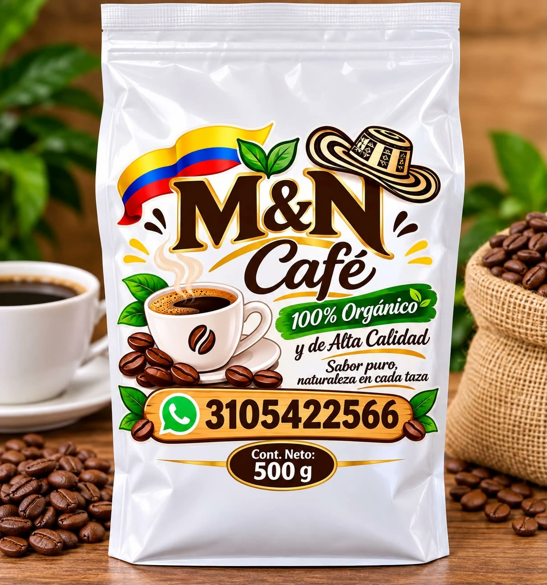
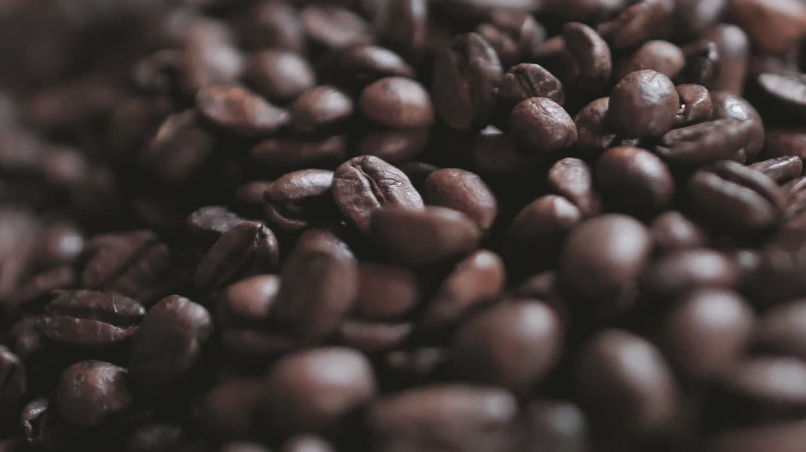
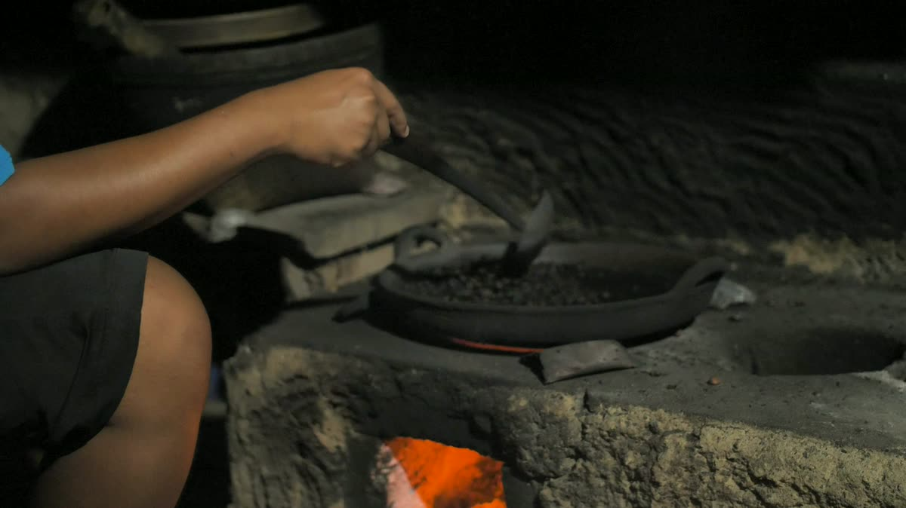
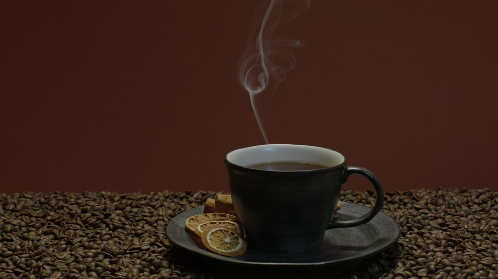

M&N Café en 30 segundos
Del grano que cae a la taza servida. Así presentamos nuestro café y la bolsa de 500 g.
- Duración
- 30 s
- Sonido
- Voz y música
Desde las tierras colombianas nace un sabor extraordinario. M&N Café es 100% orgánico y de alta calidad: sabor puro, naturaleza en cada taza.

Un buen café empieza mucho antes de la taza: en la tierra, entre hojas verdes y neblina de montaña.
M&N Café lleva ese origen a tu mesa con un grano 100% orgánico, para que cada taza sepa a lo que es: café colombiano.

Solo café. Un grano cultivado de forma natural, sin nada que le cambie el sabor.

Cuidamos el café en cada paso para que llegue a tu casa con todo su aroma.

Una taza recién servida, con cuerpo y aroma. Así sabe el café de Colombia.
Tres formas de servir un buen tinto en casa. Usa agua recién hervida, no hirviendo a borbotones.
Hierve el agua, apaga el fuego y agrega una cucharada colmada de café por pocillo. Revuelve, tapa y cuela al servir.
Pon el café en la prensa, vierte el agua y espera. Baja el émbolo despacio y sirve enseguida.
Moja primero el café con un chorrito de agua. Luego vierte el resto poco a poco, en círculos.
Con 10 g por taza, una bolsa de 500 g rinde unas 50 tazas.
Dos piezas de 30 segundos. Dale play a la que quieras.
Del grano que cae a la taza servida. Así presentamos nuestro café y la bolsa de 500 g.
En el campo y en la ciudad el día empieza con el mismo primer sorbo.
Elige cuántas bolsas quieres en la sección de pedidos y toca «Enviar pedido por WhatsApp». Se abre el chat con el mensaje ya escrito. También puedes escribirnos directo al 310 542 2566.
Te confirmamos el precio y el envío por WhatsApp, según la cantidad y la ciudad donde estés.
Unas 50 tazas, usando 10 g de café por taza. Si te gusta más cargado, rinde un poco menos.
Cierra bien la bolsa después de cada uso y guárdala en un lugar fresco y seco, lejos de la luz y de olores fuertes.
310 542 2566